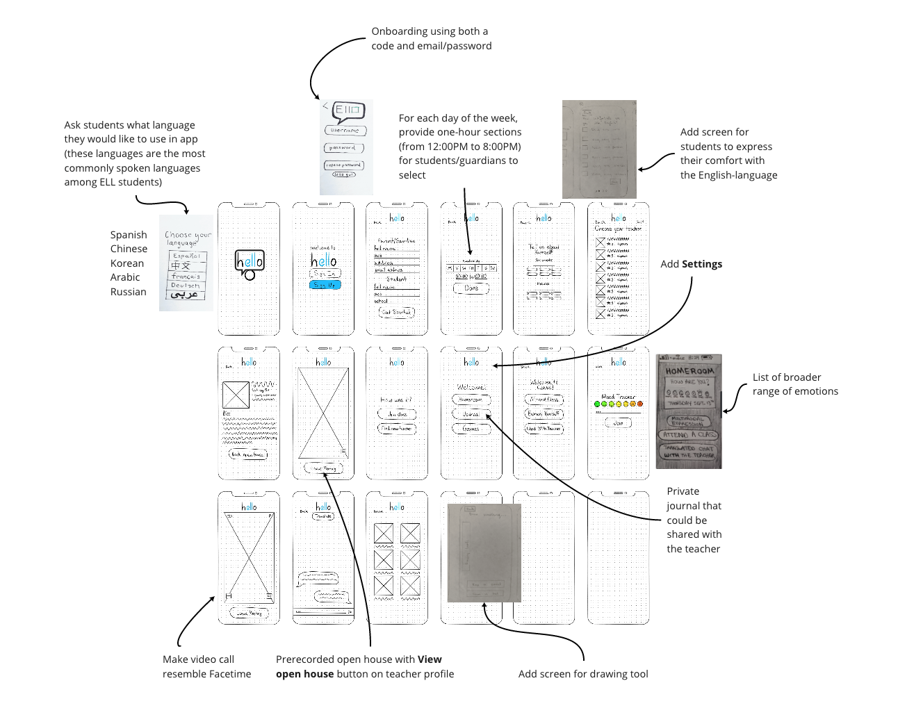
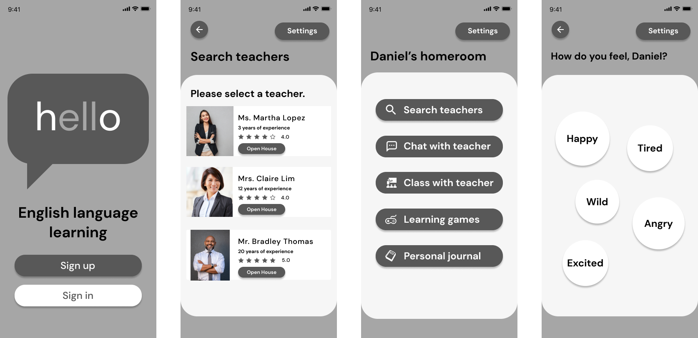

Teacher Journey Map

Our team of four created a mobile application that supports English Language Learning students by connecting them with teachers.
User Research, Sketching, Wireframing, UI Design, Prototyping
October 6, 2020 to October 24, 2020
Many teachers lack the resources to sufficiently support their English Language Learning (ELL) students in not only their English language acquisition, but also their academic, social, and emotional development.
We sought to develop an app, “hello,” that provides a space for ELL students and teachers to interact with each other through multimodal and multilingual methods, thereby providing support to ELL students for not only their English language acquisition, but also their academic, social, and emotional development.
In order to better understand the problem, we interviewed two former ELL students and two teachers who currently teach ELL students.
Many teachers lack sufficient resources to provide adequate support to their ELL students, which subsequently compromises ELL students' academic, social, and emotional development.
How might we help teachers constructively interact with their students in a virtual environment and provide ELL students with more engaging opportunities to learn and grow?
While discussing the features that we could include for both students and teachers, we identified many features with low complexity and high impact. However, we chose to prioritize features that would contribute to an engaging space for teachers and ELL students to interact and learn with each other.
Conducting usability tests with interactive prototypes of our preliminary sketches, we identified areas of integration.
Combining these areas of integration, we created our synthesized low-fidelity wireframes.
As we conducted further usability testing with our low-fidelity wireframes, our testers helped us to identify the following points of iteration.
To transition our iterated low-fidelity wireframes to our high-fidelity prototype, we created a style guide that echoed the characteristics of bright, educational, and engaging.
Applying our style guide to our iterated low-fidelity wireframes, we created our high-fidelity prototype!
Please click the button below to see the interactive prototype for hello!
With my background in elementary education, I immersed myself in this project, which served as a double edged sword. Although my spirit for our project helped to propel us forward, this same spirit sometimes obstructed my ability to critically analyze the feasibility of our objectives. My team members thankfully helped me to regain my sense of discretion when working through our Feature Prioritization Matrix so that we chose the features that would provide rudimentary, yet effective, support to students and teachers. However, despite our apparent completion of this project, I hope that just as learning never truly ceases for students and teachers, my team and I may continue to say “hello” to our project and continue to iterate and grow.